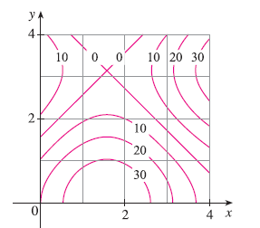

A contour map is shown for a function \(f\) on the square \(R = [0, 4] \times [0, 4]\). (a) Use the Midpoint Rule with \(m = n = 2\) to estimate the value of \(\iint_R f(x, y) dA\). (b) Estimate the average value of \(f\).